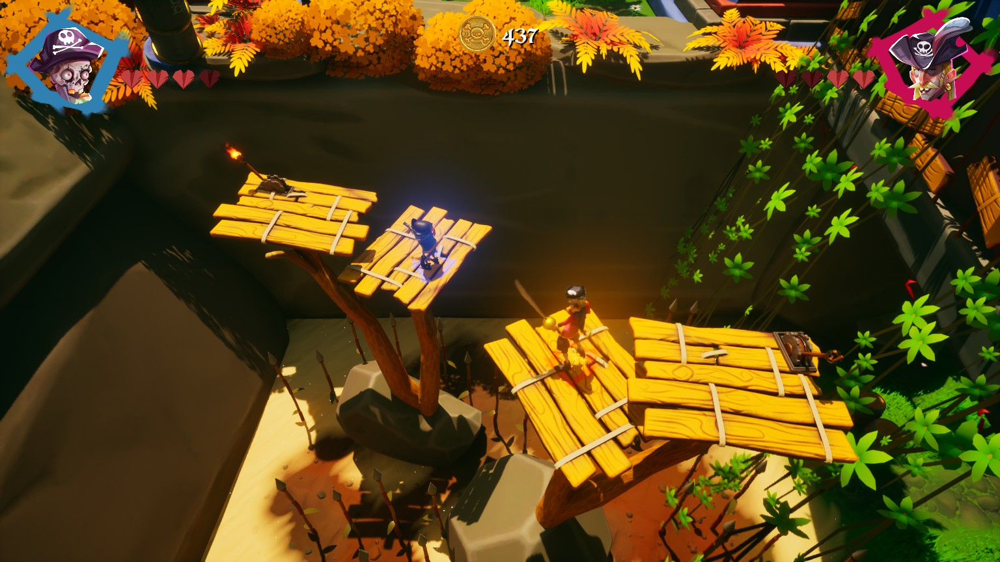
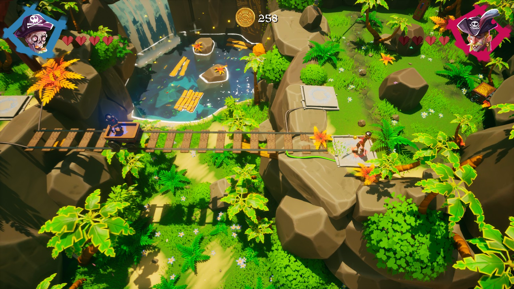
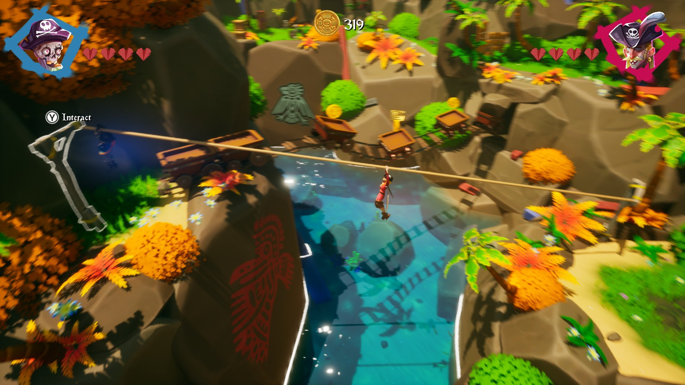
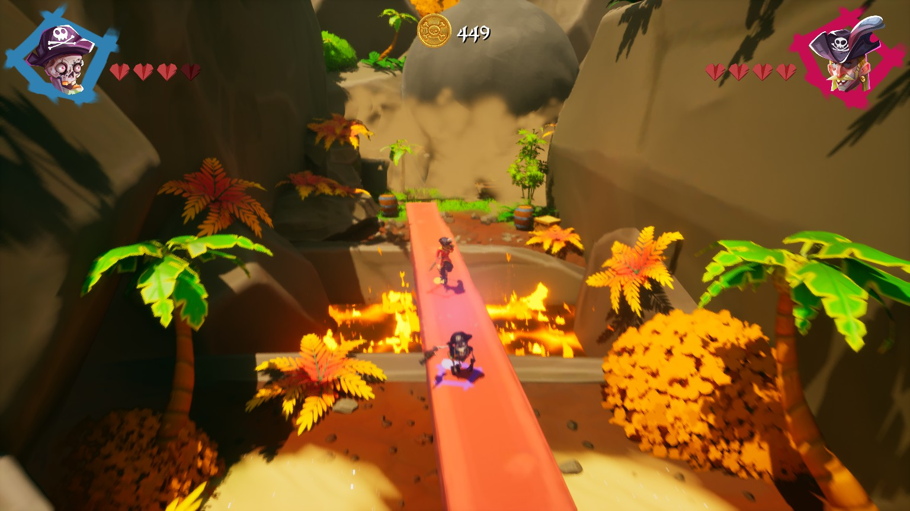

Unknowz é uma curta aventura cooperativa que acompanha dois piratas — um vivo e outro nem tanto — em uma jornada simples, mas divertida. Seguindo a clássica fórmula dos jogos de plataforma cooperativos, o game mistura combate, pequenos puzzles e aquela inevitável dose de estresse entre amigos enquanto vocês atravessam cenários coloridos e tropicais em alto-mar. A proposta funciona justamente por não tentar ser maior do que realmente é. O jogo entende sua simplicidade e aposta no entretenimento rápido, quase como aquelas experiências cooperativas perfeitas para uma tarde descompromissada. A química do gameplay entre os dois personagens cria momentos genuinamente engraçados, especialmente quando a coordenação entre os jogadores começa a dar errado, o que acontece com bastante frequência.

Mas nem toda viagem marítima acontece em águas calmas. Apesar do clima leve e divertido, Unknowz sofre com alguns problemas na movimentação dos personagens. Os controles, principalmente durante os pulos, passam uma sensação de pouca responsividade, deixando certas partes mais travadas do que deveriam. Em alguns momentos, os personagens parecem se mover de forma excessivamente desengonçada. Tudo bem serem piratas, mas talvez eles não precisassem andar como se estivessem bêbados o tempo inteiro.



“Entre tropeços, piratas e caos cooperativo, Unknowz encontra uma pitada de diversão justamente na sua simplicidade.”
Ainda assim, o jogo consegue entregar uma experiência honesta dentro da própria proposta. Sua curta duração ajuda bastante no ritmo e impede que as limitações da gameplay se tornem cansativas demais. E considerando que se trata de um jogo gratuito, fica ainda mais fácil recomendar essa pequena aventura para quem procura algo casual para jogar com um amigo. No fim, Unknowz talvez não seja uma grande revolução dos jogos cooperativos, mas definitivamente encontra seu valor no carisma, no caos entre amigos e na diversão despretensiosa que entrega do começo ao fim.
✔ O QUE É BOM
- Visual colorido e carismático.
- Cooperativo local acessível e divertido.
- Experiência gratuita.
✖ O QUE NÃO É BOM
- Movimentação pouco responsiva.
- Controles podem frustrar em alguns momentos.
- Gameplay simples e pouco variada.
Discussão e Opiniões